-
Checking the functionalities of transaction
17:57:45 PM / 30:54:043 Fail
Checking the functionalities of transaction
06.16.2023 17:57:45 06.16.2023 17:58:39 30:54:043 · #test-id=1FailChecking Cash Withdrawal Transaction - Eco Sector Withdrawal Limit Defined - Warn User if Limit Exceeds Checked Amount < LimitGiven navigate to CSMparam application and login with valid credentialsstepdefinitions.HooksClass.addScreenshot(io.cucumber.java.Scenario)screenshot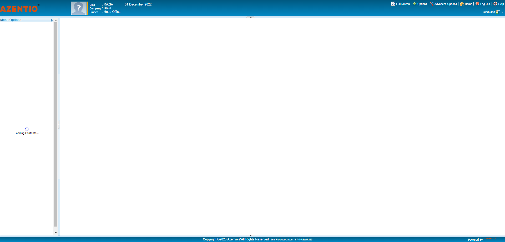And user update test data set id for TRS_116stepdefinitions.HooksClass.addScreenshot(io.cucumber.java.Scenario)screenshotAnd user click the parameters menustepdefinitions.HooksClass.addScreenshot(io.cucumber.java.Scenario)screenshot And user click the system parameters submenustepdefinitions.HooksClass.addScreenshot(io.cucumber.java.Scenario)screenshotAnd user click the User screen in system parametersstepdefinitions.HooksClass.addScreenshot(io.cucumber.java.Scenario)screenshotAnd user click the update after approve screenstepdefinitions.HooksClass.addScreenshot(io.cucumber.java.Scenario)screenshot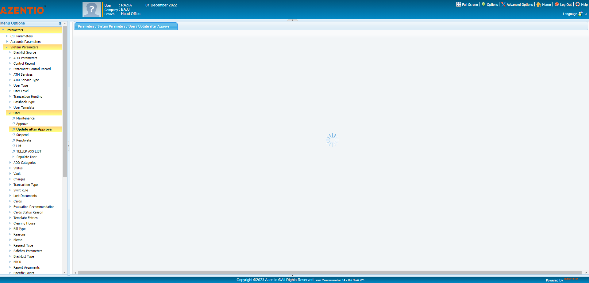And user click and send the values in user id under update after approve screenstepdefinitions.HooksClass.addScreenshot(io.cucumber.java.Scenario)screenshot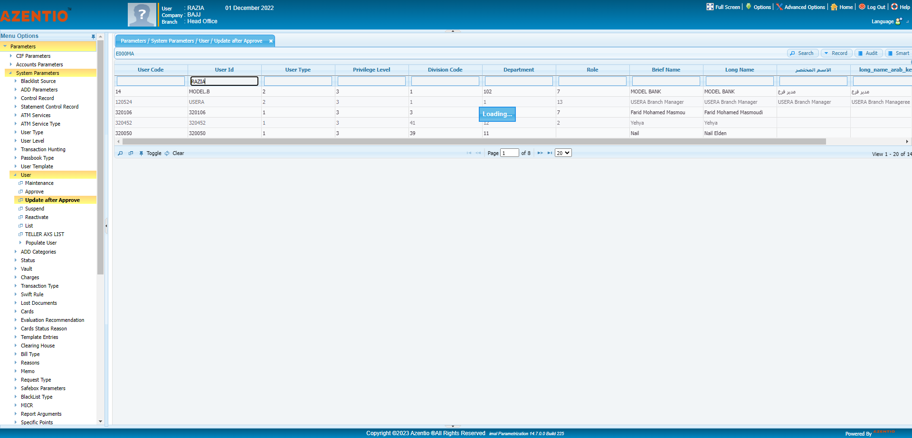And user double click the user idstepdefinitions.HooksClass.addScreenshot(io.cucumber.java.Scenario)screenshot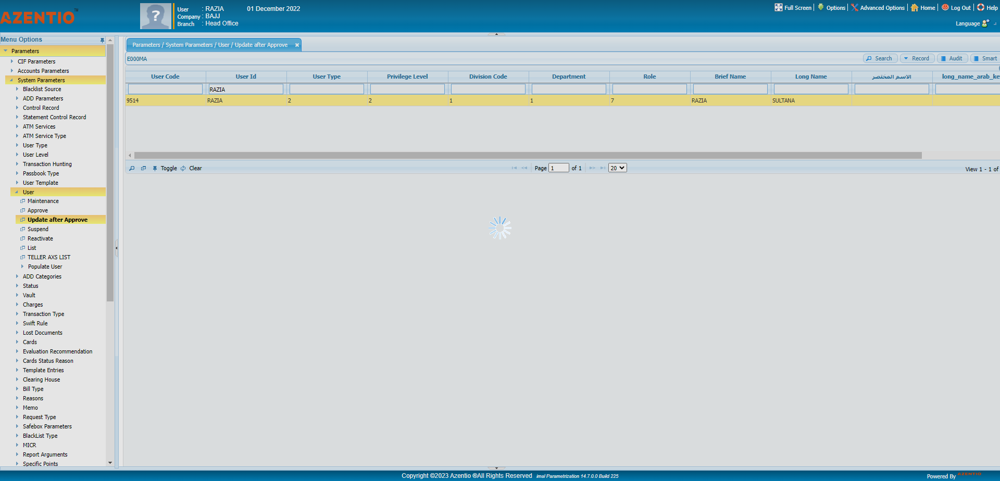Then user click Eco sector buttonstepdefinitions.HooksClass.addScreenshot(io.cucumber.java.Scenario)screenshot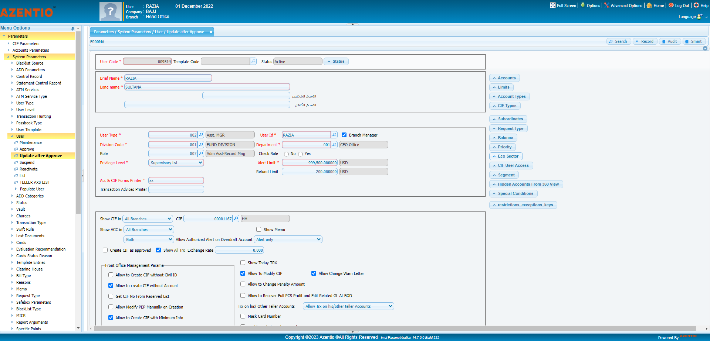And User click the Eco sector Delete Allstepdefinitions.HooksClass.addScreenshot(io.cucumber.java.Scenario)screenshot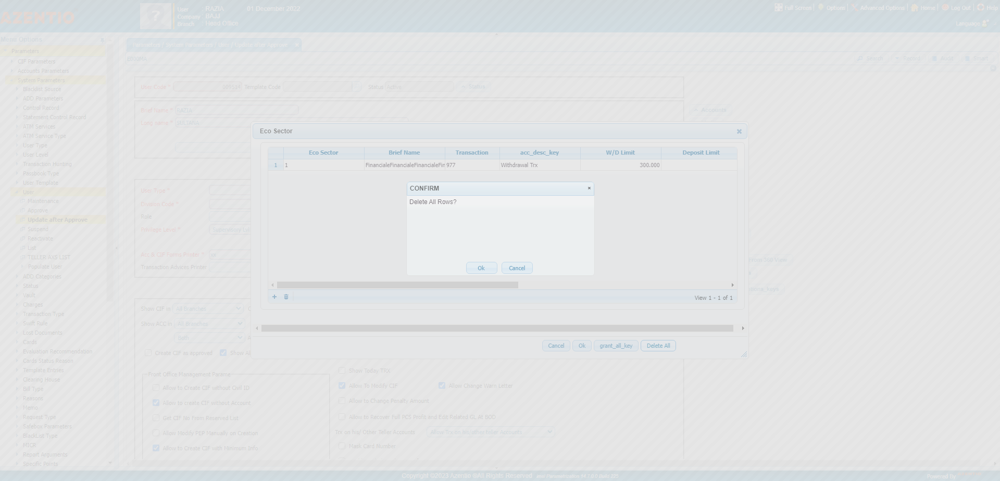And user click the confirm okstepdefinitions.HooksClass.addScreenshot(io.cucumber.java.Scenario)screenshot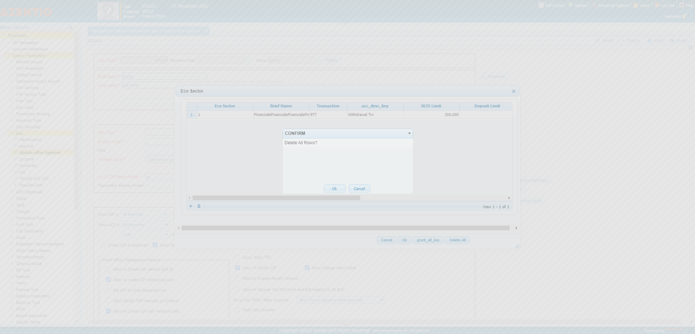And user click add icon under Eco sector limitstepdefinitions.HooksClass.addScreenshot(io.cucumber.java.Scenario)screenshot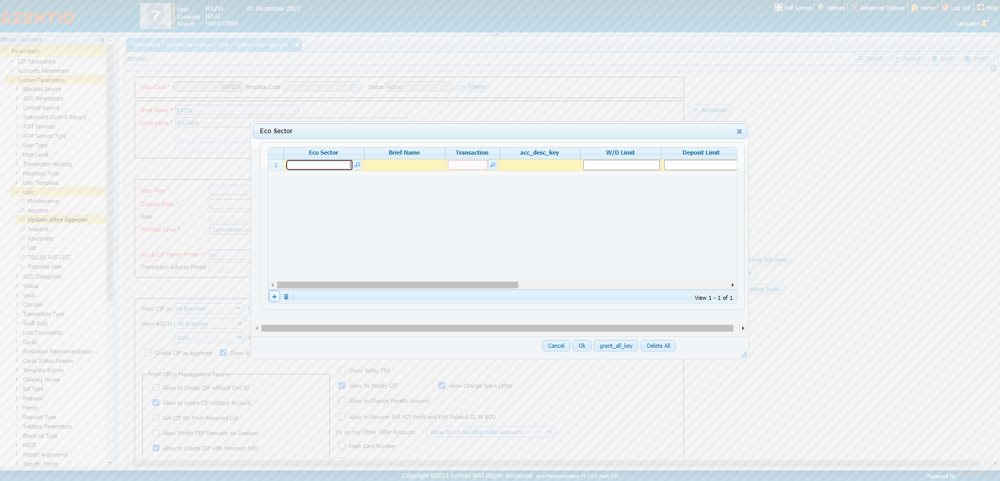And user enter eco sector valuestepdefinitions.HooksClass.addScreenshot(io.cucumber.java.Scenario)screenshot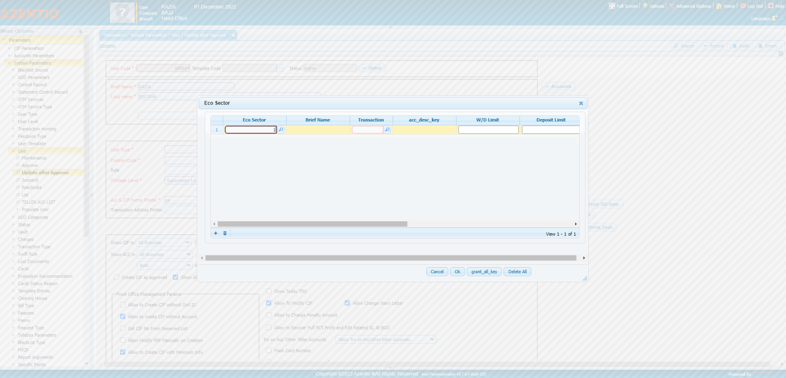And user enter transaction value under Eco sectorstepdefinitions.HooksClass.addScreenshot(io.cucumber.java.Scenario)screenshot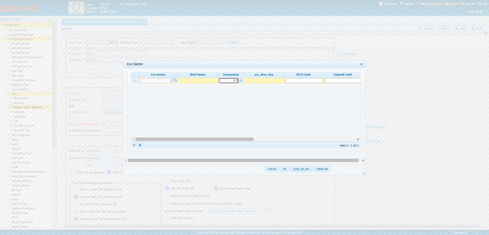And user enter withdraw limit value under Eco sectorstepdefinitions.HooksClass.addScreenshot(io.cucumber.java.Scenario)screenshot
And user click the system parameters submenustepdefinitions.HooksClass.addScreenshot(io.cucumber.java.Scenario)screenshotAnd user click the User screen in system parametersstepdefinitions.HooksClass.addScreenshot(io.cucumber.java.Scenario)screenshotAnd user click the update after approve screenstepdefinitions.HooksClass.addScreenshot(io.cucumber.java.Scenario)screenshot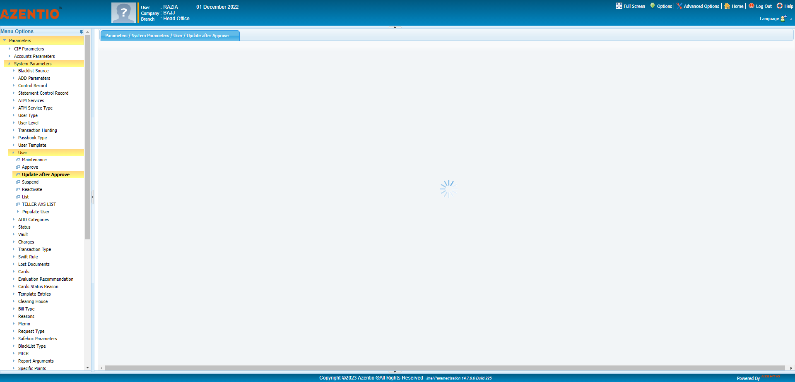And user click and send the values in user id under update after approve screenstepdefinitions.HooksClass.addScreenshot(io.cucumber.java.Scenario)screenshot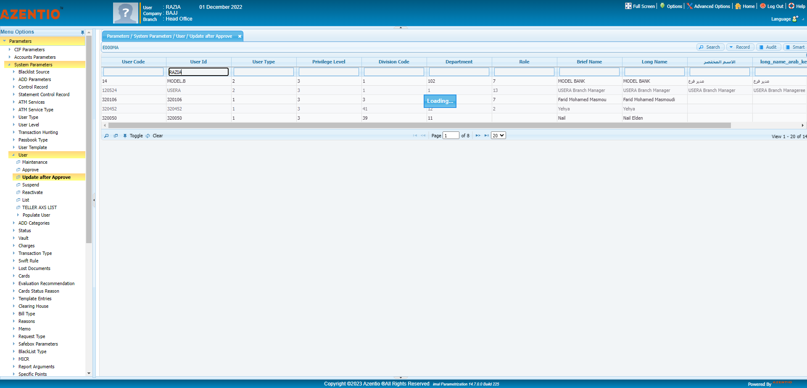And user double click the user idstepdefinitions.HooksClass.addScreenshot(io.cucumber.java.Scenario)screenshot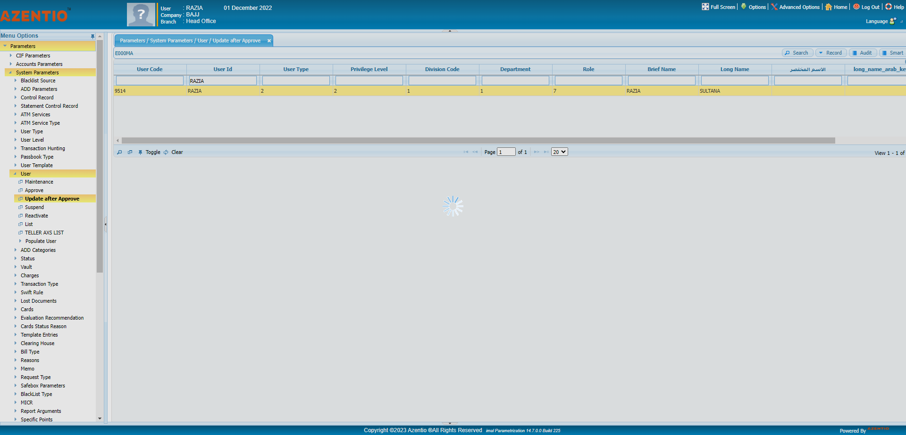Then user click Eco sector buttonstepdefinitions.HooksClass.addScreenshot(io.cucumber.java.Scenario)screenshot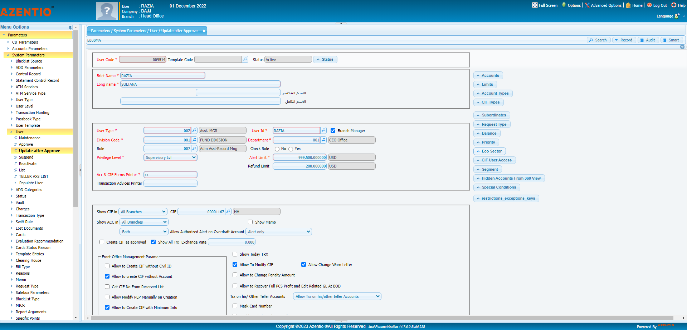And User click the Eco sector Delete Allstepdefinitions.HooksClass.addScreenshot(io.cucumber.java.Scenario)screenshot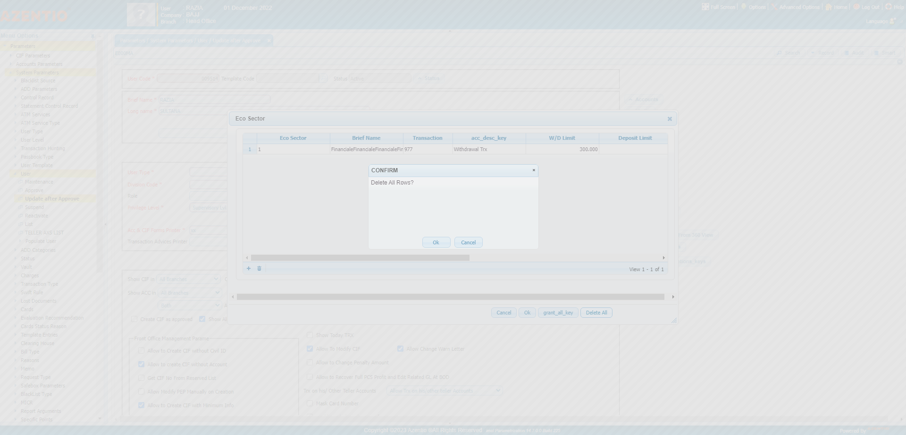And user click the confirm okstepdefinitions.HooksClass.addScreenshot(io.cucumber.java.Scenario)screenshot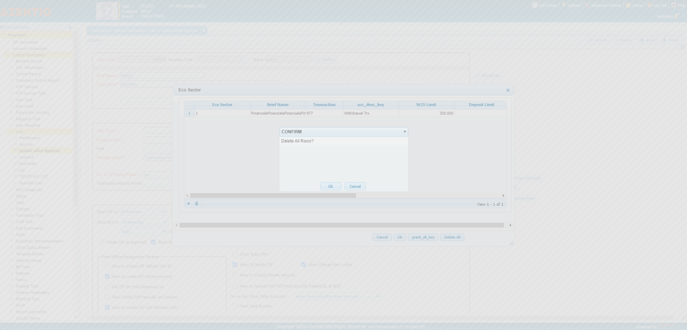And user click add icon under Eco sector limitstepdefinitions.HooksClass.addScreenshot(io.cucumber.java.Scenario)screenshot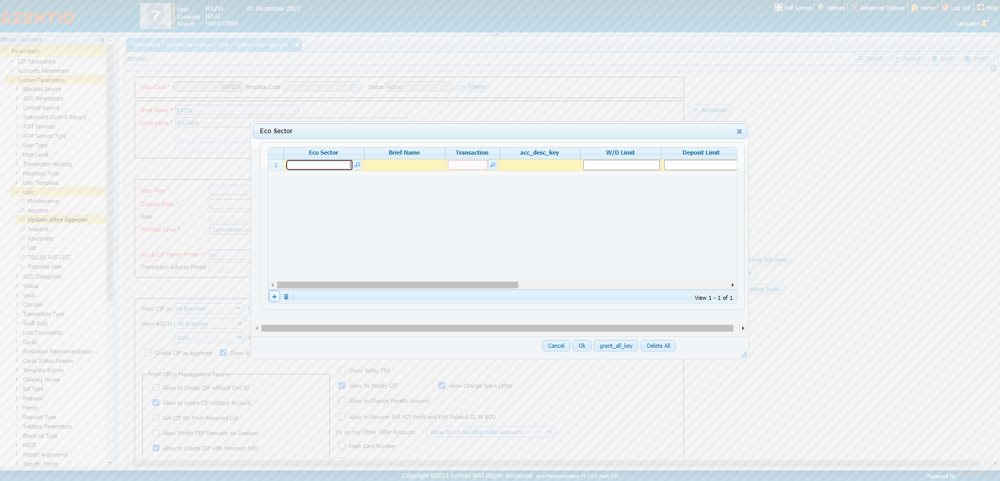And user enter eco sector valuestepdefinitions.HooksClass.addScreenshot(io.cucumber.java.Scenario)screenshot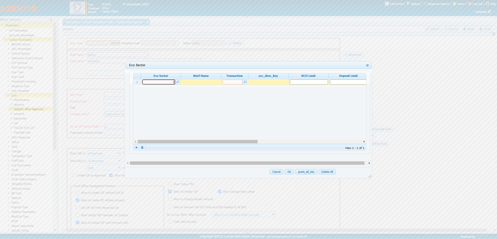And user enter transaction value under Eco sectorstepdefinitions.HooksClass.addScreenshot(io.cucumber.java.Scenario)screenshot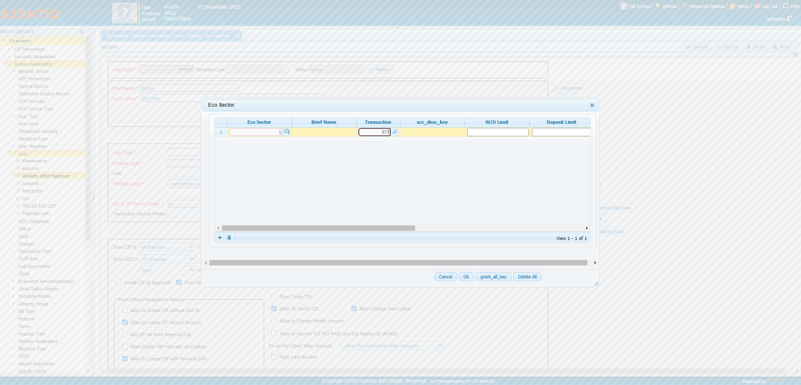And user enter withdraw limit value under Eco sectorstepdefinitions.HooksClass.addScreenshot(io.cucumber.java.Scenario)screenshot Then user verify the warn user if limit exceed flag checked under Eco sectorStep skippedAnd user click the ok button under limitStep skippedAnd user click the update after approve buttonStep skippedAnd user click the confirm okStep skippedAnd user click the sucesss okStep skippedAnd user click the approve in user screenStep skippedAnd user click and send the values in user id under Approve screenStep skippedAnd user double click the user id in approve screenStep skippedAnd user click the ApprovebttnStep skippedAnd user click the confirm okStep skippedAnd user click the sucesss okStep skipped
Then user verify the warn user if limit exceed flag checked under Eco sectorStep skippedAnd user click the ok button under limitStep skippedAnd user click the update after approve buttonStep skippedAnd user click the confirm okStep skippedAnd user click the sucesss okStep skippedAnd user click the approve in user screenStep skippedAnd user click and send the values in user id under Approve screenStep skippedAnd user double click the user id in approve screenStep skippedAnd user click the ApprovebttnStep skippedAnd user click the confirm okStep skippedAnd user click the sucesss okStep skipped
Started
Jun 16, 2023 05:57:42 PM
Ended
Jun 16, 2023 05:58:39 PM
Features Passed
0
Features Failed
1
Features
Scenarios
Steps
Timeline
Tags
| Name | Passed | Failed | Skipped | Others | Passed % |
|---|---|---|---|---|---|
| @TRS_116_01 | 0 | 1 | 0 | 0 | 0% |
System/Environment
| Name | Value |
|---|---|
| version | 10 |
| os | windows |
-
@TRS_116_01
1 tests
@TRS_116_01
1 failedStatus Timestamp TestName Fail 17:57:45 PM Checking Cash Withdrawal Transaction - Eco Sector Withdrawal Limit Defined - Warn User if Limit Exceeds Checked Amount < Limit Checking the functionalities of transaction.Checking Cash Withdrawal Transaction - Eco Sector Withdrawal Limit Defined - Warn User if Limit Exceeds Checked Amount < Limit
-
org.openqa.selenium.json.JsonException
1 tests
org.openqa.selenium.json.JsonException
1 failedStatus Timestamp TestName Fail 17:58:37 PM And user enter withdraw limit value under Eco sector Checking the functionalities of transaction.Checking Cash Withdrawal Transaction - Eco Sector Withdrawal Limit Defined - Warn User if Limit Exceeds Checked Amount < Limit.And user enter withdraw limit value under Eco sector